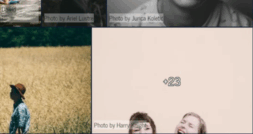

First things that you should know before you start:
- To install and configure nanogallery2, basic javascript and html knowledge is required.
- For your gallery, you need some content and you must define a layout.
The content of a gallery consists of a list of media items.
Each item should contain at least: a path to a media (image or video) and a path to a thumbnail image.
Additional properties can be set: thumbnail image height and width, string, description, responsive thumbnail images, blurred preview images, tags, exif data, IDs, album...
You need one HTML element which contains sub-elements representing the medias. Any kind of markup can be used. To simplify the documentation, we'll used A elements. For more details about markup syntax, please read the HMTL markup content definition chapter.
HTML markup example<div id="my_nanogallery2" data-nanogallery2>
<a href="img_01.jpg" data-ngthumb="img_01t.jpg">title 1</a>
<a href="img_02.jpg" data-ngthumb="img_02t.jpg">title 2</a>
<a href="img_03.jpg" data-ngthumb="img_03t.jpg">title 3</a>
...
</div>
href is the path to the media
data-ngthumb is the path to the thumbnail image
List all your medias (images or videos) in a javascript array, and pass it to the items property.
Full details can be found in the Javascript content definition chapter.
items: [
{ src: 'img_01.jpg', srct: 'img_01t.jpg', title: 'Title 1' },
{ src: 'img_02.jpg', srct: 'img_02t.jpg', title: 'Title 2' },
{ src: 'img_03.jpg', srct: 'img_03t.jpg', title: 'Title 3' }
]
src is the path to the media
srct is the path to the thumbnail image
The list of media items can also be generated automatically by an optional external data provider, like nano_photos_provider2 for example.
4 basic layouts are available. To configure the layout of your gallery, you have to define the display height and width of one thumbnail. For mosaic layout, you need also a display pattern.
<div id="nanogallery2" data-nanogallery2='{
...
"thumbnailHeight": 200,
"thumbnailWidth": 200
}'>
</div>
$("#my_nanogallery2").nanogallery2({
...
thumbnailHeight: 200,
thumbnailWidth: 200
});
thumbnailHeight is the height of the thumbnails, in pixels. thumbnailWidth is the width, in pixels.
You can define the alignement, the border width, the gutter between thumbnails, the content (title, description, tools...), themes, stacks, display animation, and hover/touch effects.
No setup is required for displaying medias from the gallery.
For customizing, read the lightbox setup section.
In addition to content and layout, you can also configure global settings which are applied to nanogallery2.
- set the global path to medias and thumbnail images: parameter itemsBaseURL
- set one thumbnail display animation: parameter thumbnailDisplayTransition
- define one hover effect on thumbnails: parameter thumbnailHoverEffect2
"itemsBaseURL": "https://nanogallery2.nanostudio.org/samples",
"thumbnailDisplayTransition": "scaleDown",
"thumbnailHoverEffect2": "scale120"
itemsBaseURL: 'https://nanogallery2.nanostudio.org/samples',
thumbnailDisplayTransition: 'scaleDown',
thumbnailHoverEffect2: 'scale120'
You're now ready to put everything together.
Your gallery can be configured in javascript or in HTML markup.
Settings are passed to the library on initialization, and are CaSe sEnSiTiVe.
use the data-nanogallery2 attribute.
<div id="my_nanogallery2" data-nanogallery2 = '{
<!-- ### gallery settings ### -->
"thumbnailHeight": 150,
"thumbnailWidth": 150,
"itemsBaseURL": "https://nanogallery2.nanostudio.org/samples/"
}'>
<!-- ### gallery content ### -->
<a href="img_01.jpg" data-ngthumb="img_01t.jpg">Title Image 1</a>
<a href="img_02.jpg" data-ngthumb="img_02t.jpg">Title Image 2</a>
<a href="img_03.jpg" data-ngthumb="img_03t.jpg">Title Image 3</a>
</div>
HTML markup: options must respect the JSON format (and not the javascript object syntax).
Property names and string values must be between double-quotes ".
Settings are passed to the nanogallery2() function.
$("#my_nanogallery2").nanogallery2({
// ### gallery settings ###
thumbnailHeight: 150,
thumbnailWidth: 150,
itemsBaseURL: 'https://nanogallery2.nanostudio.org/samples/',
// ### gallery content ###
items: [
{ src: 'img_01.jpg', srct: 'img_01t.jpg', title: 'Title Image 1' },
{ src: 'img_02.jpg', srct: 'img_02t.jpg', title: 'Title Image 2' },
{ src: 'img_03.jpg', srct: 'img_03t.jpg', title: 'Title Image 3' }
]
});
The gallery can be used without lightbox: no big image is displayed when one user clicks a thumbnail.
Set the option thumbnailOpenInLightox to false.
The lightbox can be used to display medias in fullscreen, without having a gallery managed by nanogallery2.
For this, add the attribut data-nanogallery2-lightbox to the <html> elements, which need to be linked to the lightbox. This will bind the click/touch event to nanogallery2.
<img
src = "thumbnail_image_1.jpg" <!-- thumbnail image -->
data-ngsrc = "big_image_1.jpg" <!-- big image -->
data-nanogallery2-lightbox = '{ "viewerGallery ": "none" }' <!-- lightbox configuration (optional) -->
/>
<img src="thumbnail_image_2.jpg" data-ngsrc="big_image_2.jpg" data-nanogallery2-lightbox />
<img src="thumbnail_image_3.jpg" data-ngsrc="big_image_3.jpg" data-nanogallery2-lightbox />
<a href="big_image_4.jpg"/ data-ngthumb="thumbnail_image_4.jpg" data-nanogallery2-lightbox>media title</a>
<a href="big_image_5.jpg"/ data-nanogallery2-lightbox>
<img src="thumbnail_image_5.jpg" alt="media title"/>
</a>
Attribute data-nanogallery2-lgroup can be used to group medias to be displayed in the same lightbox instance.
For the list of supported attributes, read the HMTL markup content definition chapter.
Let's see the details of the 4 basic layouts: grid, justified, cascading and mosaic.
All thumbnails have the same size. The display height and the width of the thumbnails must be defined. Thumbnail's image may be cropped to fit the defined size.
"thumbnailWidth": 300,
"thumbnailHeight": 200
The width of the thumbnail is calculated to respect the image ratio. There's no cropping and no reordering.
Set the special value auto to the thumbnailWidth property.
"thumbnailWidth": "auto",
"thumbnailHeight": 200
Sometimes also called masonry layout. This layout is column based. Image aspect ratio is conserved, with no cropping.
Set the special value auto to the thumbnailHeight property.
"thumbnailWidth": 200,
"thumbnailHeight": "auto"
The cascading layout may be enhanced by applying a grid with the option thumbnailBaseGridHeight.
"thumbnailWidth": 200,
"thumbnailHeight": "auto",
"thumbnailBaseGridHeight" : 100
Enables full control of the layout.
The layout is not computed but is based on a pattern. Images may be cropped to fit the thumbnail's size. Thumbnails can overlap one another.
To use it, set the base thumbnail width AND height, and define a pattern for position and real thumbnail size.
Gallery will be scaled down to fit its container's width if necessary.
"thumbnailHeight": "200",
"thumbnailWidth": "200",
"galleryMosaic" : [
{ "c": 1, "r": 1, "w": 2, "h": 2 },
{ "c": 3, "r": 1, "w": 1, "h": 1 },
{ "c": 3, "r": 2, "w": 1, "h": 1 },
{ "c": 1, "r": 3, "w": 1, "h": 1 },
{ "c": 3, "r": 3, "w": 2, "h": 1 }
]
Properties c and r define the position of the thumbnail (column number and row number).
Properties w and h define the size of the thumbnail (width and height multiplicator).

The gallery layout can be tuned with additional settings:
- Thumbnail border size: thumbnailBorderHorizontal, thumbnailBorderVertical
- Gutter space between thumbnails: thumbnailGutterWidth, thumbnailGutterHeight
- Thumbnail alignement is configured with the option thumbnailAlignment.
Standard gesture actions are supported to control the gallery and the lightbox.
Tap twice
The hover animation is fired on first tap.
Image is displayed in lightbox on second one.
This is the default behaviour.
Single tap
The hover animation is fired on tap, and after a defined delay, the image is automatically displayed in the lightbox.
Use the option touchAutoOpenDelay to enable this behaviour.

Horizontal swipe
Switch to next/previous gallery page, when option galleryDisplayMode: 'pagination'
Horizontal swipe
Tap left/right image side
Pinch-in/out

Double tap
Pan image
Swipe down or up
nanogallery2 includes UI interactions and animations to capture the attention of your visitors.
Use the option galleryDisplayTransition to define the animation for displaying the whole gallery.
Possible values: none, slideUp, rotateX.
The duration of the animation is defined in ms with galleryDisplayTransitionDuration.
"galleryDisplayTransition": "slideUp",
"galleryDisplayTransitionDuration": 500
galleryDisplayTransition: 'slideUp',
galleryDisplayTransitionDuration: 500
The display of each individual thumbnail can be animated with the option thumbnailDisplayTransition.
Possible values: none, slideUp, slideDown, scaleUp, scaleDown,
fadeIn, randomScale, flipDown, flipUp, slideDown2,
slideUp2, slideRight, slideLeft, custom.
Duration is defined in ms, with the option thumbnailDisplayTransitionDuration, and delay between the display of 2 thumbnails is configured in ms with thumbnailDisplayInterval.
"thumbnailDisplayTransition": "scaleUp",
"thumbnailDisplayTransitionDuration": 500,
"thumbnailDisplayInterval": 30
thumbnailDisplayTransition: 'scaleUp',
thumbnailDisplayTransitionDuration: 500,
thumbnailDisplayInterval: 30
Some values for thumbnailDisplayTransition:
For more possibilities of animations, please consult the chapter "Thumbnails"
Booth thumbnail display animation and gallery display animation can be combined to produce nice effects.
"thumbnailDisplayTransition": "slideUp2",
"thumbnailDisplayTransitionDuration": 500,
"thumbnailDisplayInterval": 30,
"galleryDisplayTransition": "rotateX",
"galleryDisplayTransitionDuration": 500
thumbnailDisplayTransition: 'slideUp2',
thumbnailDisplayTransitionDuration: 500,
thumbnailDisplayInterval: 30,
galleryDisplayTransition: 'rotateX',
galleryDisplayTransitionDuration: 500
These animations are fired on mouse hover or when the user touches the thumbnail. Multiple animations can be combined.
They are configured with the option thumbnailHoverEffect2: 'effect1|effect2|...'
Where effect is :
A predefined preset, like:
- 'imageGrayOn': to animate image from color to black&white
- 'scale120': to upscale the thumbnail by 20%
- 'borderLighter': to make the border color lighter
Example: thumbnailHoverEffect2: 'imageGrayOn|scale120'
See here for the list of available presets.
Or a customized animation:
In this case, the syntax of the effect is [element]_[property]_[fromValue]_[toValue]
Examples:
- Rotate the image from 0 to 15 degre: 'image_rotateZ_0deg_15deg'
- Upscale the image: 'image_scale_1.00_1.20'
To combine both effects: 'image_rotateZ_0deg_15deg|image_scale_1.00_1.20'
See here for more details.
Additional effect tuning is also available for controling duration, easing, hover out effect, sequential animation, etc. See the tuning section.
Configuration of the general behaviour of the gallery.
| property | default | description |
|---|---|---|
|
galleryDisplayMode galleryL1DisplayMode v1.0string |
'fullContent' |
Define how many thumbnails should be displayed in the gallery.
Possible values:
|
|
galleryDisplayMoreStep
v1.0integer |
2 |
Set the number of rows to display each time the "more button" is hit.
Only for galleryDisplayMode: 'moreButton'
|
galleryMaxRows galleryL1MaxRows v1.0integer |
2 |
Maximum number of rows to display
Only for galleryDisplayMode: 'rows' or galleryDisplayMode: 'pagination'.
Not supported in cascading layout. |
|
galleryPaginationMode
v1.0string |
'rectangles' |
Display type in pagination mode (galleryDisplayMode: 'pagination').
Possible values:
|
|
paginationSwipe
v1.0boolean |
true | Enables swipe gesture to display next/previous gallery page, in gallery pagination mode. |
|
paginationVisiblePages
v1.0integer |
10 |
Maximum number of pagination elements (numbers) displayed at the bottom of the gallery.
Only for galleryDisplayMode: 'pagination' and galleryPaginationMode: 'numbers'
|
|
galleryLastRowFull
v1.0boolean |
false |
When enabled, the last thumbnail's row will not be displayed if it doesn't fill the full width of the gallery.
Only for grid and justified layouts. |
|
gallerySorting galleryL1Sorting v1.0string |
'' |
Sort order. No sorting by default.
Possible values: 'titleAsc', 'titleDesc', 'reversed', 'random' (=shuffle). |
|
galleryMaxItems galleryL1MaxItems v1.0integer |
0 | Maximum number of items per album. 0 = display all. |
|
galleryResizeAnimation
v1.0boolean |
true | Animates the thumbnails to their new position when the gallery/display is resized. |
|
galleryTheme colorScheme v1.0stringobject |
'dark' |
Gallery theme (thumbnails, navigation...).
Possible values: 'dark', 'light' Custom themes are supported. Since v1.5, properties 'colorScheme' and 'galleryTheme' are synonymous. |
|
openOnStart
v1.0string |
Opens the specified album or display the specified image on library start.
Syntax: 'albumID' or 'albumID/imageID' |
|
|
thumbnailSelectable
v1.0boolean |
false | Enable/disable the selection mode. A checkbox is displayed over each thumbnail to allow the user to select multiple thumbnails. |
|
galleryRenderDelay
v1.3integer |
30 | Delay in ms before starting the gallery rendering. |
|
thumbnailDisplayOutsideScreen
v1.2boolean |
true |
Thumbnails are displayed (true) or hidden (false) when they are positioned outside of the screen / viewport.
For better performances with large galleries, use false. |
|
galleryDisplayTransition galleryL1DisplayTransition v1.4string |
'none' |
Transition for displaing the gallery. Applied on the whole gallery.
Possible values: 'none', 'rotateX', 'slideUp' |
|
galleryDisplayTransitionDuration galleryL1DisplayTransitionDuration v1.4integer |
1000 | Duration of the gallery display transition, in milliseconds. |
Configure layout and display animations of the thumbnails.
| property | default | description |
|---|---|---|
Thumbnail layout |
||
|
thumbnailWidth thumbnailL1Width v1.0integerstring |
300 |
Thumbnails image width in pixels, or 'auto'.
Responsive sizes are supported (format 'default XSn SMn MEn LAn XLn') Use 'auto' for a gallery with justified layout. |
|
thumbnailHeight thumbnailL1Height v1.0integerstring |
200 |
Thumbnails image height in pixels, or 'auto'.
Responsive sizes are supported (format 'default XSn SMn MEn LAn XLn') Use 'auto' for a gallery with cascading/masonry layout. |
|
thumbnailAlignment
v1.0string |
'fillWidth' |
Horizontal thumbnail alignement in the available width.
This option is ignored for the justified layout. Possible values:
|
|
thumbnailGutterWidth thumbnailL1GutterWidth thumbnailGutterHeight thumbnailL1GutterHeight v1.0integerv3.0string |
2 |
Sets the horizontal and vertical gutter space between thumbnails.
Since v3: responsive sizes are also supported (format 'default XSn SMn MEn LAn XLn') |
|
thumbnailBorderHorizontalv1.0
thumbnailL1BorderHorizontalv3.0 thumbnailBorderVerticalv1.0 thumbnailL1BorderVerticalv3.0 integer |
2 | Set the horizontal (left and right) / vertical (top and bottom) thumbnail border size. |
|
thumbnailStacks thumbnailL1Stacks v1.2integer |
0 | Adds N stacks behind each thumbnail. Usefull for thumbnails hover effects |
|
thumbnailSliderDelay
v2.0integer |
2000 |
Image slider on last displayed thumbnail. Set the delay in ms between the display of 2 images (value 0: disabled).
Supported when galleryDisplayMode set to 'rows' or to 'fullContent' with galleryLastRowFull enabled.
 |
Thumbnail display animation |
||
|
thumbnailDisplayInterval thumbnailL1DisplayInterval v1.0integer |
15 | Interval in ms between the display of 2 thumbnails (in ms). |
|
thumbnailDisplayOrder thumbnailL1DisplayOrder v3.0string |
'' |
Thumbnail's display order.
Possible values: '', 'random' |
|
thumbnailDisplayTransition thumbnailL1DisplayTransition v1.0v1.3string |
'fadeIn' |
Transition used to display each individual thumbnail.
Possible values: 'slideUp', 'slideDown', 'scaleUp', 'scaleDown', 'fadeIn', 'randomScale', 'flipDown', 'flipUp', 'slideDown2', 'slideUp2', 'slideRight', 'slideLeft', 'imageSlideUp', 'custom' |
|
thumbnailDisplayTransitionDuration thumbnailL1DisplayTransitionDuration v1.0integer |
240 | Duration of the display transition (in ms). |
|
thumbnailDisplayTransitionEasing thumbnailL1DisplayTransitionEasing v3.0string |
'easeOutQuart' |
Easing for the thumbnail display animation.
More about easing on this page. |
Miscellaneous |
||
|
thumbnailOpenInLightox
v3.0boolean v1.0boolean |
true |
Display media in lightbox.
|
|
thumbnailFeaturedKeyword
string v1.0 |
'*featured' |
Keyword to set the feature status of a thumbnail. The keyword is searched in the title and the description. If the keyword is found, the featured icon will be displayed over the thumbnail. |
|
thumbnailWaitImageLoaded
v1.4boolean |
true | Waits until thumbails images are fully downloaded before displaying them smoothly. |
|
thumbnailCrop thumbnailL1Crop v1.0boolean |
true |
If needed, thumbnail image will be cropped to avoid black borders (only for grid layout). |
For a fully responsive gallery, you can define multiple thumbnail sizes, and gutter spaces.
Sizes can be defined dependant of the screen resolution.
5 screen resolutions are supported: XS (extra-small), SM (small), ME (medium), LA (large), XL (extra-large)
Use the following syntax to assign multiple values to one responsive option'defaultSize XSs1 SMs2 MEs3 LAs4 XLs5'
where s1 to s5 are the sizes for resolutions XS to XL. All values are not mandatory: default value will be used if one is missing.
Responsive options:
- thumbnail size:
thumbnailWidththumbnailHeightthumbnailL1WidththumbnailL1Height
The value auto is supported.
- thumbnail gutter space:
thumbnailGutterWidththumbnailGutterHeightthumbnailGutterL1WidththumbnailGutterL1Height
Mosaic layout:
A specific layout can be defined for each screen width:
galleryMosaicXSgalleryMosaicSMgalleryMosaicMEgalleryMosaicLAgalleryMosaicXL
galleryL1MosaicXSgalleryL1MosaicSMgalleryL1MosaicMEgalleryL1MosaicLAgalleryL1MosaicXL
Responsive thumbnail sizes are also supported.
Examples:
"thumbnailWidth": "300 XS100 LA400 XL500",
"thumbnailHeight": "200 XS80 LA250 XL350"
thumbnailWidth: '300 XS100 LA400 XL500',
thumbnailHeight: '200 XS80 LA250 XL350'
"thumbnailWidth": "auto XS80 SM120",
"thumbnailHeight": "200 XS80 SM120"
thumbnailWidth: 'auto XS80 SM120',
thumbnailHeight: '200 XS80 SM120'
"thumbnailWidth": "auto XS80 SM120",
"thumbnailHeight": "200 XSauto SMauto"
thumbnailWidth: 'auto XS80 SM120',
thumbnailHeight: '200 XSauto SMauto'
The label is composed by a title and a description. Set these settings with the thumbnailLabel property.
HTML markup example
<div id="my_nanogallery2" data-nanogallery2 = '{ >
"thumbnailHeight": 200,
"thumbnailWidth": 300,
"thumbnailAlignment": "center",
"thumbnailLabel": { "valign": "bottom", "position": "overImage", "hideIcons": true },
...
</div>
$("#myNanoGallery").nanogallery2({
...
thumbnailHeight: 200,
thumbnailWidth: 300,
thumbnailAlignment: 'center',
thumbnailLabel: { valign: "bottom", position: 'overImage', hideIcons: true },
...
});
| property | default | description |
|---|---|---|
|
position
v1.0string |
'overImageOnBottom' |
Position of the label on the thumbnail.
Possible values: 'overImage', 'onBottom' Depreciated values (v3+): 'overImageOnBottom', 'overImageOnTop', 'overImageOnMiddle' 
|
|
align
v1.0string |
'center' |
Horizontal text alignment.
Possible values: 'right', 'center', 'left' |
|
valign
v3.0string |
'bottom' |
Vertical text alignment.
Possible values: 'top', 'middle', 'bottom' |
|
display
v1.0boolean |
true | Displays or hides the label (title and description). |
|
hideIcons
v1.0boolean |
true | Hides or displays the icons beside the title. |
|
titleMaxLength
v1.0integer |
0 | Title maximum length to display. |
|
titleMultiLine
v1.0boolean |
false | Title can be multiline (not supported with position:'onBottom'). |
|
title
v1.0string |
Variable to set the image title (undescores are replaced by spaces).
Possible values: - '%filename': use the filename without path - '%filenameNoExt': use the filename without path and without extension |
|
|
titleFontSize
v1.0string |
Set the title font size. Example: titleFontSize: '2em'
|
|
|
displayDescription
v1.0boolean |
false | Displays or hides the description. |
|
descriptionMaxLength
v1.0integer |
0 | Description maximum length to display. |
|
descriptionMultiLine
v1.0boolean |
false | Description can be multiline (not supported with position:'onBottom'). |
|
descriptionFontSize
v1.0string |
Set the description font size. Example: descriptionFontSize: '0.8em'
|
Hover effects are triggered on mouse over or on touch-tap. They are confugured with the thumbnailHoverEffect2 parameter.
You can set one or multiple presets to the thumbnailHoverEffect2 with the syntax thumbnailHoverEffect2: 'preset1|preset2|...'
Possible presets:
Usage example:
thumbnailHoverEffect2: 'toolsAppear'
thumbnailHoverEffect2: 'borderDarker|labelAppear75'
For a full control of the effects, use the syntax thumbnailHoverEffect2: 'effect1|effect2|...'
where effectN has the syntax [element]_[property]_[fromValue]_[toValue]
label_backgroundColor_rgba(255,255,255,0.80)_rgba(255,255,255,0.01)
transform-function.
image_rotateZ_0deg_15deg
visual effect.
'image_grayscale_0%_100%
Some examples:
thumbnailHoverEffect2: 'image_sepia_100%_1%''image_blur_0.00px_2.00px''image_rotateZ_0deg_15deg''image_grayscale_0%_100%'image_scale_1.00_1.20image_scale_1.20_1.00'label_backgroundColor_rgba(255,255,255,0.80)_rgba(255,255,255,0.01)'customlayer_backgroundColor_rgba(160,0,0,0.0)_rgba(160,0,0,0.5)tools_opacity_1_0.5image_contrast_1_4image_brightness_1_2thumbnailHoverEffect2:'image_grayscale_0%_100%|image_rotateZ_0deg_15deg'
Initialization
In some case, it's interesting to set CSS properties but without any animation.
For this, use the option thumbnailBuildInit2: : 'init1|init2|...' where initN has the syntax: [element]_[property]_[value].
Example : thumbnailBuildInit2: 'image_scale_1.20'
Fine tuning settings: duration, delay, easing, back duration, back delay, beack easing, hoverin, hoverout, first keyframe. Syntax:
thumbnailHoverEffect2: {
name: '[effectName]',
delay: 0,
duration: 400,
easing: 'easeOutQuart',
delayBack: 0,
durationBack: 300,
easingBack: 'easeOutQuart',
hoverin: true,
hoverout: true,
firstKeyframe: true
}
Where:
Note: name is the only mandatory proprety.
Some examples:
thumbnailHoverEffect2: { name: 'imageBlurOn', duration: 800, easing: 'easeInCubic', delayBack: 0, durationBack: 300, easingBack: 'easeOutQuart' }thumbnailHoverEffect2: { name: 'image_rotateZ_0deg_15deg', duration: 800, durationBack: 500}thumbnailHoverEffect2: [{ name: 'image_scale_1.00_1.20', duration: 500}, { name: 'image_rotateZ_0deg_15deg', delay: 500}]
Stacks can be added behind thumbnails to create nice hover effects. Their color is defined in the galleryTheme.
Use thumbnailStacks and thumbnailL1Stacks to define then number of stacks.
The thumbnail animation is applied to the stack, but with a percent value.
For example, if thumbnailStacksRotateX is set to 0.4, then the 1st stack will have a percent of 0.6 applied to the rotationX value of the thumbnail.
For the second stack, the percent will be 0.2, for the third one it will be -0,2, and so on.
Possible parameters to set these percents: 'thumbnailStacksTranslateX', 'thumbnailStacksTranslateY', 'thumbnailStacksTranslateZ', 'thumbnailStacksRotateX', 'thumbnailStacksRotateY', 'thumbnailStacksRotateZ', 'thumbnailStacksScale'
Each corner of one thumbnail has a toolbar. You can customize each of these toolbars. Customization is specific for albums and for images.
| property | description |
|---|---|
|
thumbnailToolbarImage
v1.0object |
Image toolbars Syntax: thumbnailToolbarImage: { topLeft:'', topRight: '', bottomLeft: '', bottomRight: ''}Possible tools: 'select', 'share', 'featured', 'download', 'shoppingcart', 'info', 'display' Default: { topLeft: 'select', topRight : 'featured' }
|
|
thumbnailToolbarAlbum
v1.0object |
Album toolbars Syntax: thumbnailToolbarAlbum: { topLeft:'', topRight: '', bottomLeft: '', bottomRight: ''}Possible tools: 'select', 'share', 'counter', 'counter2' Default: { topLeft: 'select', topRight : 'counter' }
|
Configure how the user can navigate in albums, filter the thumbnails based on tags, and the touch/tap handling.
| property | default | description |
|---|---|---|
|
displayBreadcrumb
v1.0boolean |
true | Display the breadcrumb for navigation in albums. |
|
breadcrumbOnlyCurrentLevel
v1.0boolean |
true | Display only the name of the current album. |
|
breadcrumbAutoHideTopLevel
v1.0boolean |
true | No breadcrumb on albums first navigation level. |
|
breadcrumbHideIcons
v1.0boolean |
Hide or display breadcrumb's icons. | |
|
galleryFilterTags galleryL1FilterTags v1.0booleanstring |
false |
Display tags to filter the thumbnails.
Possible values: - false: disabled - true: enabled - 'title': extract the tags from the title (string starting with #) - 'description': extract the tags from the description (string starting with #) |
|
thumbnailLevelUp
v1.0boolean |
false | Display one thumbnail to navigate in the parent album. |
|
locationHash
v1.0boolean |
true |
Enables hash tracking.
This will activate browser Back/Forward navigation (browser history support) and Deep Linking of images and photo albums. Must be enabled to allow sharing of images/albums. Note: only one gallery per HTML page should use this feature. |
|
touchAnimation touchAnimationL1 v1.0boolean |
true |
Enables thumbnail hover animation on touch event.
The user must tap a thumbnail twice to show the image or open a album. |
|
touchAutoOpenDelay
v1.0integer |
0 |
When a user touch a thumbnail, delay in ms before opening the touched thumbnail.
Particular values: -1 = disabled (user needs to tap twice to open the thumbnail), 0 = automatic (the library will calculate automatically the delay). Note: the parameter is ignored when touchAnimation=false.
|
|
navigationFontSize
v1.0string |
Define the font size for the navigation (breadcrumb and filters). Example: navigationFontSize: '1.2em'
|
Gallery and thumbnails settings can be defined specificaly for the first album level (root level), and for the other ones.
Default settings are used for all album levels (including the first one).
Property names with L1 are specific to the first level.
Example: define a grid layout for the first level, and a justified layout for all other levels.
<div id="my_nanogallery2" data-nanogallery2 = '{ >
"thumbnailHeight": 200, // heigth for all gallery levels
"thumbnailWidth": "auto", // width for all gallery levels
"thumbnailL1Height": 300, // height for first gallery level -> overwrites the thumbnailHeight value
"thumbnailL1Width": 300, // width for first gallery level -> overwrites the thumbnailWidth value
...
</div>
Javascript example
$("#myNanoGallery").nanogallery2({
...
thumbnailHeight: 200, // heigth for all gallery levels
thumbnailWidth: 'auto', // width for all gallery levels
thumbnailL1Height: 300, // height for first gallery level -> overwrites the thumbnailHeight value
thumbnailL1Width: 300, // width for first gallery level -> overwrites the thumbnailWidth value
...
});
The lightbox is used to display medias (images and videos) in full size.
The available tools can be displayed in each of the 3 toolbars (standard, top-left and top-right).
The standard toolbar has 2 states which are toggled with the 'minimizeButton' tool. Each state has it's own configuration.
Possible tools: 'previousButton', 'nextButton', 'rotateLeft', 'rotateRight', 'pageCounter', 'playPauseButton', 'fullscreenButton', 'infoButton', 'linkOriginalButton', 'closeButton', 'downloadButton', 'zoomButton', 'shareButton', 'label' (image title and description), 'shoppingcart', 'customN'
To add custom elements in a toolbar, use the label customN, where N is an integer (e.g. custom1, custom2...).
<div id="my_nanogallery2" data-nanogallery2 = '{ >
"viewerToolbar": {
"display": true,
"standard": "minimizeButton, label",
"minimized": "minimizeButton, label, fullscreenButton, downloadButton, infoButton"
},
"viewerTools": {
"topLeft": "pageCounter",
"topRight": "playPauseButton, zoomButton, fullscreenButton, closeButton"
}
...
</div>
viewerToolbar: {
display: true,
standard: 'minimizeButton, label',
minimized: 'minimizeButton, label, fullscreenButton, downloadButton, infoButton'
},
viewerTools: {
topLeft: 'pageCounter',
topRight: 'playPauseButton, zoomButton, fullscreenButton, closeButton'
}
| property | default | description |
|---|---|---|
General settings |
||
|
imageTransition
v1.0v2.3string |
'swipe2' |
Display transition from one media to the next one.
Possible values: 'slideAppear', 'swipe', 'swipe2'. |
|
slideshowAutoStart
v1.0boolean |
false | Starts automatically the slideshow when a media is displayed in lightbox. |
|
slideshowDelay
v1.0integer |
3000 |
Duration of the photo display in slideshow mode (in ms).
The delay starts when an image is fully downloaded. |
|
viewerHideToolsDelay
v1.3integer |
4000 | Delay of inactivity before hidding the tools and labels. |
|
viewerFullscreen
v1.0boolean |
false | Displays the lightbox directly in fullscreen (on supported browser). |
Lightbox image gallery |
||
|
viewerGallery
v3.0string |
'bottomOverMedia' |
Display one gallery with thumbnails at the bottom of the lightbox.
Possible values: 'none', 'bottomOverMedia', 'bottom'. |
|
viewerGalleryTWidth
viewerGalleryTHeight v3.0integer |
40 | Image gallery on lightbox: width and height of the thumbnails, in pixels. |
Lightbox toolbars |
||
|
viewerToolbar
v1.0object |
Display options for the lightbox main toolbar. | |
|
display
v1.0boolean |
false | Displays/hides the main toolbar. |
|
position
v1.0string |
'bottom' |
Vertical position. Possible values: 'top', 'bottom' Note: values 'topOverImage', 'bottomOverImage' are depreciated since v3.0 |
|
align
v1.0string |
'center' | Horizontal alignement. Possible values: 'left', 'right', 'center' |
|
fullWidth
v1.0boolean |
false | Toolbar is as width as the screen. |
|
autoMinimize
v1.0integer |
800 | Breakpoint for switching between minimized and standard toolbar. If the width is lower than this value, the toolbar is switched to minimized. |
|
standard
v1.0string |
List of items (tools/labels) to display in the standard toolbar (comma separated). For this toolbar, 'minimizeButton' is additionally available. Default value: viewerToolbar: { standard :'minimizeButton, label'} |
|
|
minimized
v1.0string |
List of items to display in the minimized toolbar (comma separated). For this toolbar, 'minimizeButton' is additionally available. Default value: viewerToolbar: { standard :'minimizeButton, label, infoButton, shareButton, fullscreenButton'} |
|
Lightbox tools |
||
|
viewerTools
v1.0object |
Tools in the top corners of the lightbox, over the media. | |
|
topLeft
v1.0string |
Toolbar positioned in the top left corner. Default value: viewerTools : { topLeft: 'pageCounter, playPauseButton'}
|
|
|
topRight
v1.0string |
Toolbar positioned in the top right corner. Default value: viewerTools : { topRight: 'zoomButton, closeButton'}
|
|
Miscellaneous |
||
|
viewerTheme colorSchemeViewer v1.0v1.5stringobject |
'dark' |
Image display theme.
Possible values: 'dark', 'light', 'border'. Custom themes are supported. Since v1.5, properties 'colorSchemeViewer' and 'viewerTheme' are synonymous. |
|
viewerImageDisplay
v1.5string |
Manage the image display zoom factor.
Possible values: - '': no not apply any zoom factor - 'bestImageQuality': display images smaller for a better quality (on high DPI screens like Retina, etc.) - 'upscale': upscale image to screen size |
|
|
viewerTransitionMediaKind
v2.0string |
'img' |
Enables or disables the display transition for each media kind.
Supported values: 'img', 'iframe' Example: viewerTransitionMediaKind: 'img,iframe' |
These settings are used for the gallery and the lightbox.
| property | default | description |
|---|---|---|
|
itemsBaseURL
v1.0string |
'' |
Global path to medias (big images, thumbnail images, videos) The value will be added to the URLs of medias, which don't start with a protocole (HTTP, HTTPS, ...) Example: itemsBaseURL: 'https://nanogallery2.nanostudio.org/samples/'
|
|
eventsDebounceDelay
v2.2integer |
50 |
Thumbnail's lazy display fine tuning Response delay in ms after resizing, rotation and scroll events. |
All icons used in nanogallery2 can be customized. By default, the icon font included in the nanogallery2's package is used.
Example: replace the default album icon with a red one from Font Awesome:
<div id="my_nanogallery2" data-nanogallery2 = '{ >
...
"icons": {
"thumbnailAlbum": "<i style='color:#e00;' class='fa fa-search-plus'></i>"
}
...
</div>
Javascript example
view demo on codepen
$("#myNanoGallery").nanogallery2({
...
icons: {
thumbnailAlbum: '<i style="color:#e00;" class="fa fa-search-plus"></i>'
}
...
});
// BREADCRUMB:
breadcrumbAlbum: '<i class="nGY2Icon-folder-empty"></i>' // album icon
breadcrumbHome: '<i class="nGY2Icon-home"></i>' // home icon
breadcrumbSeparator: '<i class="nGY2Icon-left-open"></i>' // separator icon
breadcrumbSeparatorRtl: '<i class="nGY2Icon-right-open"></i>' // separator RTL icon
// FILTERS:
navigationFilterSelected: '<i style="color:#bff;" class="nGY2Icon-toggle-on"></i>' // selected icon
navigationFilterUnselected: '<i class="nGY2Icon-toggle-off"></i>' // unselected icon
navigationFilterSelectedAll: '<i class="nGY2Icon-toggle-off"></i>' // unselect all icon
// THUMBNAILS:
thumbnailAlbum: '<i class="nGY2Icon-folder-empty"></i>' // album icon
thumbnailImage: '<i class="nGY2Icon-picture"></i>' // image icon
thumbnailSelected: '<i class="nGY2Icon-ok-circled"></i>' // selected icon
thumbnailUnselected: '<i class="nGY2Icon-circle-empty"></i>' // unselected icon
thumbnailFeatured: '<i style="color:#ffa;" class="nGY2Icon-star"></i>' // featured icon
thumbnailCounter: '<i class="nGY2Icon-picture"></i>' // image icon
thumbnailShare: '<i class="nGY2Icon-share"></i>' // share icon
thumbnailDownload: '<i class="nGY2Icon-download"></i>' // download icon
thumbnailInfo: '<i class="nGY2Icon-ngy2_info2"></i>' // info icon
thumbnailCart: '<i class="nGY2Icon-basket"></i>' // add to shopping cart icon
thumbnailDisplay: '<i class="nGY2Icon-ngy2_zoom_in2"></i>' // display image icon
thumbnailCustomTool[1..10]: 'T1..T10' // custom tool 1 to 10
thumbnailAlbumUp: '<i style="font-size: 3em;" class="nGY2Icon-level-up"></i>' // album up icon
// GALLERY:
paginationNext: '<i class="nGY2Icon-right-open"></i>' // pagination - next page icon
paginationPrevious: '<i class="nGY2Icon-left-open"></i>' // pagination - previous page icon
galleryMoreButton: '<i class="nGY2Icon-picture"></i> <i class="nGY2Icon-right-open"></i>' // close button icon
// LIGHTBOX:
buttonClose: '<i class="nGY2Icon-ngy2_close2"></i>' // close button icon
viewerPrevious: '<i class="nGY2Icon-ngy2_chevron-left"></i>' // icon for previous image (toolbar)
viewerNext: '<i class="nGY2Icon-ngy2_chevron-right"></i>' // icon for next image (toolbar)
viewerImgPrevious: '<i class="nGY2Icon-ngy2_chevron_left3"></i>' // icon for previous image (on the left side of the image)
viewerImgNext: '<i class="nGY2Icon-ngy2_chevron_right3"></i>' // icon for next image (on the right side of the image)
viewerDownload: '<i class="nGY2Icon-ngy2_download2"></i>' // icon image download (toolbar)
viewerToolbarMin: '<i class="nGY2Icon-ellipsis-vert"></i>' // icon for minimized toolbar
viewerToolbarStd: '<i class="nGY2Icon-menu"></i>' // icon for maximized toolbar
viewerPlay: '<i class="nGY2Icon-play"></i>' // icon play - to start the slideshow (toolbar)
viewerPause: '<i class="nGY2Icon-pause"></i>' // icon pause - to stop the slideshow (toolbar)
viewerFullscreenOn: '<i class="nGY2Icon-resize-full"></i>' // icon to switch on fullscreen (toolbar)
viewerFullscreenOff: '<i class="nGY2Icon-resize-small"></i>' // icon to switch off fullscreen (toolbar)
viewerZoomIn: '<i class="nGY2Icon-ngy2_zoom_in2"></i>' // icon zoom in (toolbar)
viewerZoomOut: '<i class="nGY2Icon-ngy2_zoom_out2"></i>' // icon zoom out (toolbar)
viewerLinkOriginal: '<i class="nGY2Icon-ngy2_external2"></i>' // icon link to original image (toolbar)
viewerInfo: '<i class="nGY2Icon-ngy2_info2"></i>' // icon infobox (toolbar)
viewerShare: '<i class="nGY2Icon-ngy2_share2"></i>' // icon share link (toolbar)
user: '<i class="nGY2Icon-user"></i>' // icon author (infobox)
location: '<i class="nGY2Icon-location"></i>' // icon location on Google Maps (infobox)
config: '<i class="nGY2Icon-wrench"></i>' // icon config for EXIF (infobox)
viewerCustomTool[1..10]: 'T1..T10' // custom tool 1 to 10
// SHARE:
shareFacebook: '<i style="color:#3b5998;" class="nGY2Icon-facebook-squared"></i>' // icon Facebook
shareTwitter: '<i style="color:#00aced;" class="nGY2Icon-twitter-squared"></i>' // icon Twitter
shareGooglePlus: '<i style="color:#dd4b39;" class="nGY2Icon-gplus-squared"></i>' // icon Google plus
shareTumblr: '<i style="color:#32506d;" class="nGY2Icon-tumblr-squared"></i>' // icon Tumblr
sharePinterest: '<i style="color:#cb2027;" class="nGY2Icon-pinterest-squared"></i>' // icon Pinterest
shareVK: '<i style="color:#3b5998;" class="nGY2Icon-vkontakte"></i>' // icon Pinterest
shareMail: '<i style="color:#555;" class="nGY2Icon-mail-alt"></i>' // icon mail-to
Themes allow you to customize some elements without changing the CSS file.
Two separated themes can be set: one for the gallery (galleryTheme), and one for the lightbox (viewerTheme).
For each one, 2 templates can be used:dark(default valude) andlight. You can define your own customized theme.
Example, set the background and the border color of the thumbnails, set the toolbar content color:
$("#my_nanogallery2").nanogallery2({ ... galleryTheme: { thumbnail : { background: '#F00', borderColor: '#F00' } }, viewerTheme : { barColor: #F00 }, ... });
Gallery theme format (with default values):
{
navigationBar : { background: 'none', borderTop: '', borderBottom: '', borderRight: '', borderLeft: '' },
navigationBreadcrumb : { background: '#111', color: '#fff', colorHover: '#ccc', borderRadius: '4px' },
navigationFilter : { color: '#ddd', background: '#111', colorSelected: '#fff', backgroundSelected: '#111', borderRadius: '4px' },
navigationPagination : { background: '#111', color: '#fff', colorHover: '#ccc', borderRadius: '4px' },
thumbnail : { background: '#444', backgroundImage: 'linear-gradient(315deg, #111 0%, #445 90%)', borderColor: '#000', borderRadius: '0px', labelOpacity : 1, labelBackground: 'rgba(34, 34, 34, 0)', titleColor: '#fff', titleBgColor: 'transparent', titleShadow: '', descriptionColor: '#ccc', descriptionBgColor: 'transparent', descriptionShadow: '', stackBackground: '#aaa' },
thumbnailIcon : { padding: '5px', color: '#fff', shadow:'' },
pagination : { background: '#181818', backgroundSelected: '#666', color: '#fff', borderRadius: '2px', shapeBorder: '3px solid #666', shapeColor: '#444', shapeSelectedColor: '#aaa'}
}
Lightbox theme format (with default values):
Javascript example{
background: '#000',
barBackground: 'rgba(4, 4, 4, 0.2)',
barBorder: '0px solid #111',
barColor: '#fff',
barDescriptionColor: '#ccc'
}
nanogallery2 comes with an interesting set of new features that should streamline your development experience.
Due to many enhancements, nanogallery2 is not 100% compatible with nanoGALLERY.
In particular, the thumbnail hover effects engine has been rewritten: the optionthumbnailHoverEffectis now replaced bythumbnailHoverEffect2.
Here's the list of depreciated and no more supported options.
| property | comment |
|---|---|
| thumbnailHoverEffect | replaced by thumbnailHoverEffect2 |
| picasaUseUrlCrossDomain | no more needed |
| albumList | replaced by albumList2 |
| galleryToolbarWidthAligned | |
| galleryToolbarHideIcons | Replaced by breadcrumbHideIcons. Each icon can now be customized with the icons |
| galleryFullpageButton | |
| galleryFullpageBgColor | |
| galleryRenderStep | |
| itemsSelectable keepSelection showCheckboxes checkboxStyle selectMode |
thumbnail selection is now managed by the thumbnailSelectable option. |
| paginationMaxLinesPerPage | replaced by galleryMaxRows and galleryL1MaxRows |
| paginationDots | replaced by galleryPaginationMode |
| albumMax | replaced by galleryMaxItems and galleryL1MaxItems - ignored for self hosted images. |
| photoSorting albumSorting dataSorting |
replaced by gallerySorting and galleryL1Sorting |
| thumbnailLazyLoad thumbnailLazyLoadTreshold lazyBuild lazyBuildTreshold |
managed automatically |
| maxWidth | |
| thumbnailAdjustLastRowHeight | is now the standard behaviour |
| fnChangeSelectMode | use fnThumbnailSelection instead. |
| fnThumbnailHoverResize | |
| setUnselectedItems setSelectedItems |
use itemsSetSelectedValue instead. |
| getSelectedItems | use itemsSelectedGet instead. |
| paginationPreviousPage paginationNextPage paginationCountPages paginationGotoPage |
|
| galleryCountImages moveToNextAlbum moveToPreviousAlbum |
|
| viewerToolbar.style |
| callbacks | comment |
|---|---|
| fnViewerInfo | No more used. Please replace with toolbar custom buttons (fnImgToolbarCustInit, fnImgToolbarCustClick) |
| fnInitGallery | replaced and enhanced by fnGalleryRenderStart and fnGalleryRenderEnd |
| API methods | comment |
|---|---|
| getItems |
Instead, use data to get a pointer to an array containing all the items.
Example: $('#your_nanogallery2').nanogallery2('data').items;
|
| getItem | replaced by: $('#your_nanogallery2').nanogallery2('data').items[item_index]; |
| getItemsIndex | no more needed |
| refreshSize | refresh |
Recommandations / Performances / FAQ
do not combine too much effects (smooth animation on a computer may be slow on a mobile device).
define each thumbnail's size.
define each image's size.
Assign an ID to the DIV containing the gallery.
Each album and image must have an ID defined.
IDs should never been changed.
By default, HTML tags cannot be used in titles and descriptions of images.
To enable HTML tags, set the optionallowHTMLinData: true.
Be aware that this could lead to XSS (cross site scripting) vulnerability.
Firefox 6+ - Chrome 16+ - Edge 13+ - IE 11+ - Opera 12.1+ - Yandex 14.12+ - iPhone 5+ / iOS 6+ - Safari 6.2+
(some features may not be available on every platform).
Testing services provided by BrowserStack